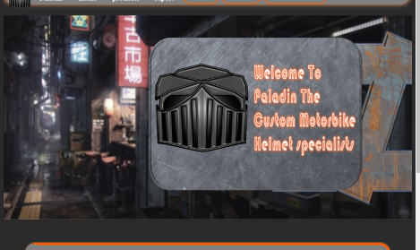
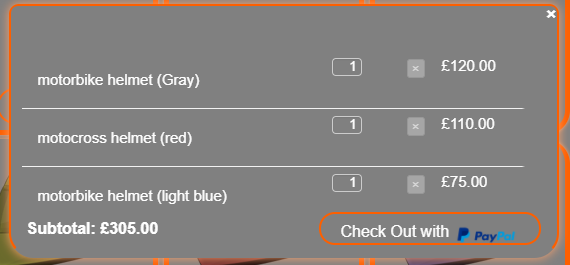
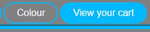
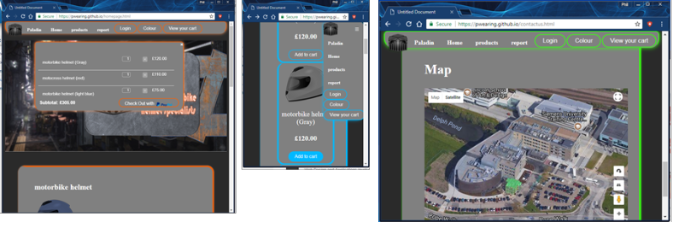
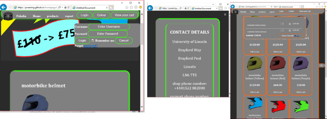
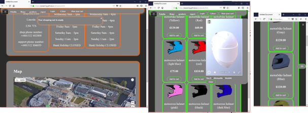
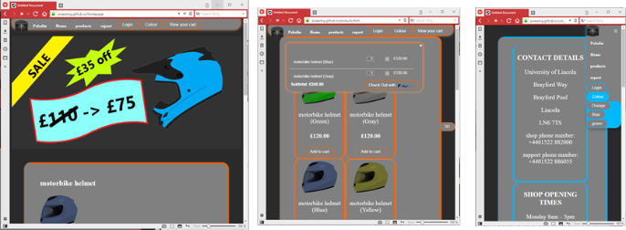

CMP1130M Web Authoring
Phil Wearing
Introduction
In this report I will be talking about best practice and standards of my website where I applied different methods to create my website, I will also be talking about the strengths and weaknesses of current web standards and the challenges presented in creating a website.
Best practice and standards
The first best practice that I applied in to the website was an automatic carousel that appears when the web site is opened, I did this to catch the user’s attention, so they won't click off the web site and I used an automatic carousel over a manual carousel because the carousel will start moving straight away without any user input, so it will catch the eye of the user. This has an overall superior result compared to having a still image because it allows the homepage to have some movement without overwhelming the user.
Another beneficial practice that I applied to the website is the auto updating shopping basket that can be accessed from anywhere in the website without having to change the page, and the user can view or make changes to their items while moving around the website because the basket is on every page and it auto updates as you click on the “add to cart” buttons. This is superior vs a dedicated web page because the user doesn’t need to go back and forth to access their items that they have added to their basket allowing for a smoother user experience.
One of the most common standards that have been implemented in to my website is the google map feature that allows the user to see the location of our building and allows the user to see what our building looks like, and what the local area is like as well using google street view. This is superior to using an image of a map because there is more interactivity and it allows the user to look at our location in different forms like map, 3d photo and street view.
strengths and weaknesses of current web standards
The main strength of current web standards are the simplified layouts of websites for example, larger buttons and hyperlinks that allow the less able or disabled users to use the website while using accessibility tools like the mouth stick to use the website. I have applied this to my website by having all buttons and hyperlinks glow when they are being hovered over.
Compering this to the old web were to access hyperlinks you will need to click on the text to access the hyperlink, this makes it very difficult for the less able or disabled to use because you must be very precise to click on the hyperlink to access that website.
Another strength is the amount of custom colours and background options that you can apply to the websites, for example you can add a colour blind mode that allows all users to see the site without having to use overlay programs. Comparing this to old web standards were the websites are normally black text with a plain white background, this can be a large problem for anyone who can’t read black text on white background.
Allowing a website to work on mobile dives and tablets allows users that can’t operate a key board and mouse to use the internet because they can use a touch screen which is easier to use for most people, but the website must use a function that allows the layout of the website to become touch screen friendly, like making the buttons larger and any menus to become tabs that you open and close to prevent any of the menus from getting in the way.
The current weaknesses of web standards are the complexity of the websites because if you want to create a complex website, but you also want to keep to W3C standards this can be very problematic because you need to keep the layout of the website easy to use for all users. Other problems you can come across is the overall look and function of the website because if you make the website to easy to use then it might not look professional or even look like it was designed for children.
Comparing this to old websites that were limited by the technology of there time, so most websites looked the same apart from different fonts, colours and logos and they were difficult to use compared to current website standards.
challenges presented
The main challenges were deciding what to add in to the website, like shall I add a drag and drop system in to the shop where you will drag the item into the basket to buy it which seemed to much like a game and not very professional. Another challenge was to find the right JavaScript to make my website work, for example I wanted to add a carousel were images were to move from left to right to make my website more inviting, but I had no experience in JavaScript, so I had to find the right JavaScript tutorial to make the carousel work.
Browser tests
Chrome
Shop: pass
Carousel: pass
Mobile support: pass
Css changer: pass
Google map: pass
Internet explorer
Shop: pass
Carousel: pass
Mobile support: pass
Css changer: pass
Google map: pass
Firefox
Shop: pass
Carousel: pass
Mobile support: pass
Css changer: pass
Google map: pass
Vivaldi
Shop: pass
Carousel: pass
Mobile support: pass
Css changer: pass
Google map: pass
Browser Test conclusion
The website performs the same across all browsers used, with no difference in performance or load times. All tests were using the live version of the website, so the response times will be consistent and to see if there was any difference in load times or feedback times, for example to see if the shop updated slower in chrome, compared to internet explorer.